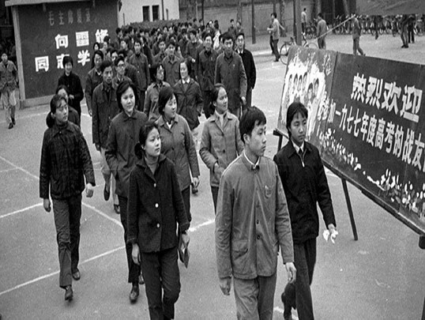
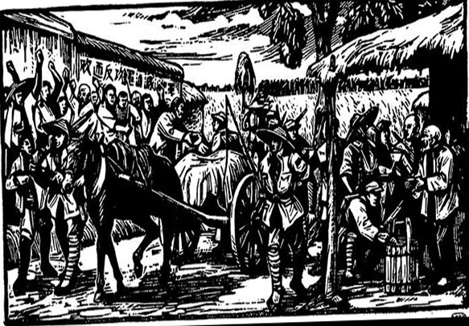
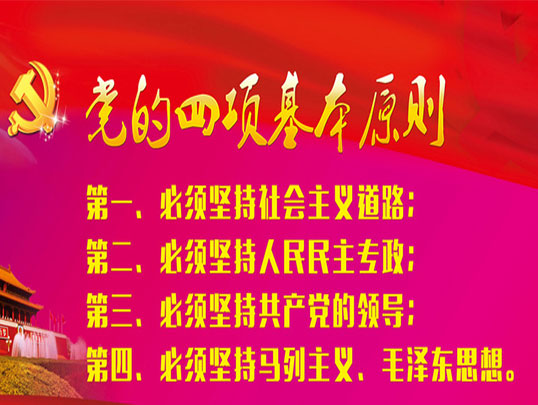
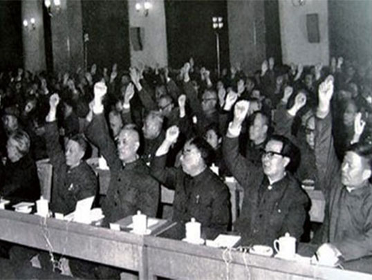
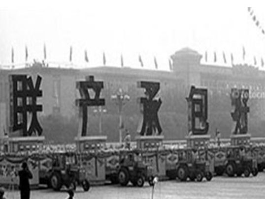
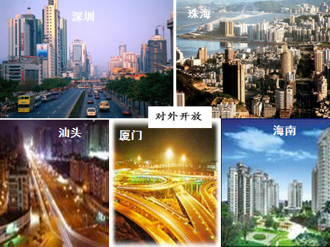
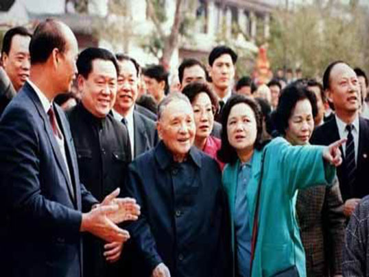

Great turn
-
Resume the college entrance examination
-
Reform and Opening
-
Four basic principles
-
The Third Plenary Session of the Eleventh Central Committee
-
Household contract responsibility system
-
Open to the outside world
-
Southern talk
reform and opening up, Chinese - characteristic socialist construction course
The restoration of the NCEE
In 1977, due to the impact of the Cultural Revolution was interrupted by a decade of China's national entrance exam was restored, thus re - China ushered in the knowledge and talent of the spring.In September 1977, the Ministry of Education held a national committee on admission working conference, decided to resume and has stopped the 10 - year national college admission exam, unified exam, the best way to select talents to college.This is a turning point in the national college enrollment decision of the Conference, the recovery of the Target group: workers, peasants, countryside and was home educated youth, demobilized soldiers and cadres, and recent high school graduates.The Meeting also decided that the admissions, will give priority to the key colleges and universities, medical schools, colleges and colleges of agriculture, after students graduate by the nation.
emancipating the mind and seeking truth from facts, unite in looking ahead
Comrade Deng Xiaoping in 1978 on Dec. 13, the closing session of the Central Working Conference speech.For the Third Plenary Session of the Eleventh Central Committee of the Chinese Communist Party that immediately followed was well - prepared.In essence, this speech was the Third Plenary Session of the thematic reports.
The Four Cardinal Principles
March 30, 1979, Deng Xiaoping, on behalf of the CPC Central Committee in Beijing on the principles for theoretical work "The Four Cardinal Principles" of speech.In a speech in which Deng Xiaoping put forward must adhere to the "four cardinal principles".i.e. "first, we must adhere to the socialist road; second, must uphold the dictatorship of the proletariat (1982 - - that Comrade Hua Guofeng resigned as Chairman of the CPC Central Committee, Deng ser as the" Constitution of the People's Republic of China "instead of the dictatorship of the proletariat in the democratic dictatorship by the people); the third, must uphold the leadership of the Communist Party;Fourthly, we must uphold Marxism - Leninism, Mao Zedong Thought. "
the Third Plenary Session of the
This conference is the "cultural revolution" (1966 - 76) ended, China faced the development of this crucial historical juncture convened in the future and destiny of the party will be a very important meeting, which realizes the ideological, political and organizational lines of order out of chaos,Implement government since the founding of the CPC's history of the great turning point of China opened up the socialist modernization construction of the new road.
reform and opening - up
In December 1978 Third Plenary Session of the 11th Central Committee of the Communist Party of China started implementing the reform at home, its opening - up policy.In a basic line of one of two essential points.Since the Third Plenary Session of the socialist modernization and for the general policy, general policy.Is the only path for strengthening the Party's development and progress and the source of vitality.Reform, i.e. carrying out reforms at home, adhering to the socialist system under the premise of self - consciously adjust and reform the relations of production with productive forces and the superstructure with economic basis" of those aspects and links, promoting the development of the productive forces and social progress, better realize the basic benefit of the people.Of opening up, quicken the modernization of China is the only way to construct, in line with the characteristics and development trend of the world, is to uphold a basic national policy.
the household contract responsibility system
In 1978 the family - contract responsibility system reform, land ownership and property right is divided into.Remain in the ownership of collective rights, and on the other hand, a collective economic organization according to the average for farmers to subcontract, the collective economic organizations in charge of the supervision contract, the utility's unified arrangement and used for scheduling, land adjustment and distribution, which have formed are all has cent, all branch of the system.The household contract responsibility system, the implementation of the corrective was chosen as the centralized management and business is too monotonous, so that the farmers in the collective as well as from the worker becomes are both producers and operators, thereby greatly mobilized the enthusiasm of the farmers produce, successfully carrying out labor and land potential.
Opening to the Outside World
April 1979 Deng Xiaoping firstly put forward the "export zones", in July 1979, secretary of the Communist Party of China (CPC) Central Committee, with the consent of the State Council in China's Guangdong Province, Shenzhen, Zhuhai, Shantou and Xiamen, Fujian Province, the three cities of pilot export zones.China to open trade window opening to the outside.Nature of the special economic zone is also home to the world port of one of the main forms.To reducing tariffs and other incentives as a means to create an investment climate that is favorable to encourage foreign investment, introduce advanced technology and scientific management methods, which can serve to promote economic and technological development in the country in which the D.C.Special Economic Zones (SEZs) have been adopted in economic policy, flexible economic measures and the special system of economic management, and insist that economic development goals.
Southern Talk
January 18, 1992 to February 21, Mr. Deng on Wuchang, Shenzhen, Zhuhai, Shanghai, made a keynote speech.Put forward the "three favourables".Deng Xiaoping's impact on China in the 1990s of the economic reform and social progress, which has played a key role in promoting this.Opens a new chapter of China's reform and opening - up.
© Copyright 2018 by Guangxi University La Cheerleading. All Rights Reserved.